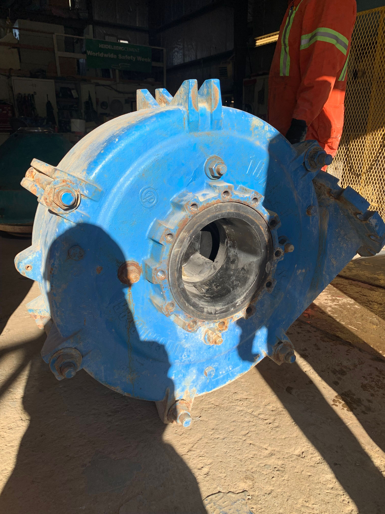
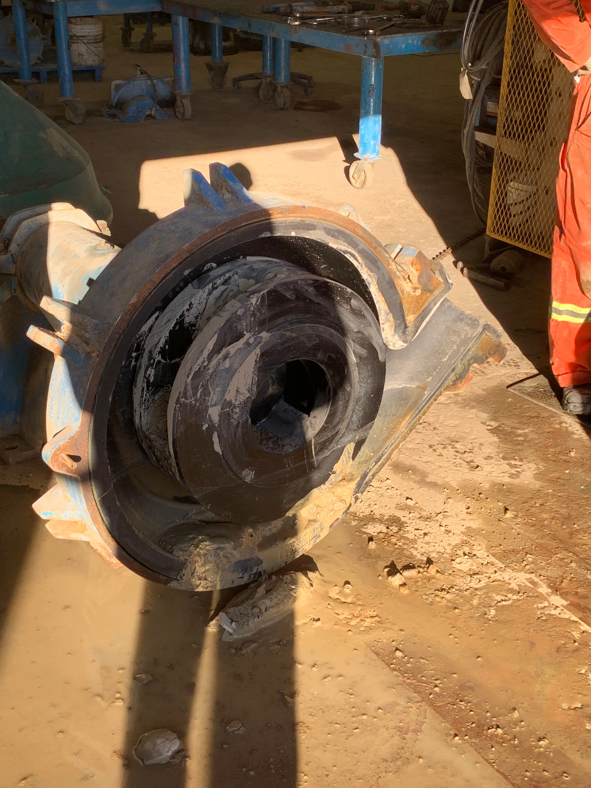
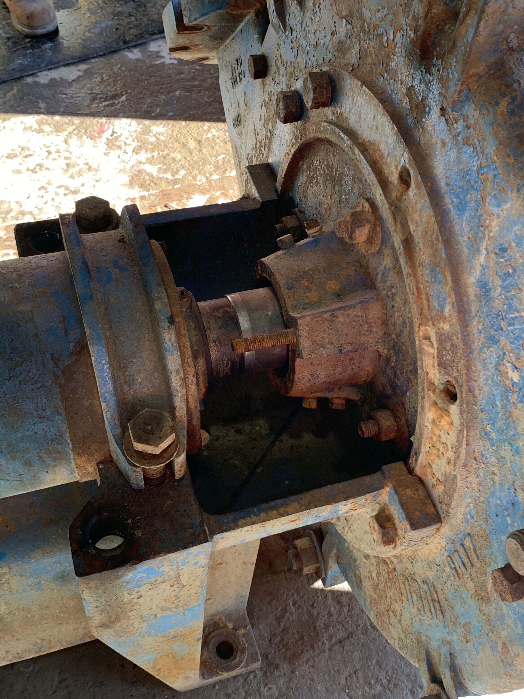

Pump Failure Analysis — SLRC 10×8×21
Field troubleshooting • Mechanical inspection • Wear analysis • Root cause summary • Rebuild scope
Context
Worksite visit to an aggregate processing plant to support the maintenance crew and engineers with pump training and to assess underperforming parts of the mineral processing system. During inspection, an SLRC 10×8×21 severe-duty, rubber-lined centrifugal pump was found failed and removed for teardown.
Problem statement
- Pump was in a failed state: impeller could not rotate.
- Operational symptoms included reduced performance and evidence of abnormal internal wear.
Inspection findings
- Impeller clearance was excessive (out of tolerance), which contributed to poor sealing and internal wear.
- Packing was severely worn (“shot”), consistent with oversized impeller clearance and poor sealing.
- Upon removing the front casing, the front wear plate and impeller showed wear consistent with abrasion/contact.
- Evidence suggested an oversized rock had jammed the pump, accelerating wear and contributing to the seized condition.
- Most wet-end liner components appeared serviceable: liners can be reused (no major structural damage observed).
- Bearing frame damage due to water contamination: oil contained water/sludge, indicating seal failure/ingress and poor lubrication.
Root cause summary
- Primary mechanical event: oversized rock ingestion/jamming → abnormal contact/wear at the impeller/wear plate.
- Secondary contributors: excessive impeller clearance → accelerated packing wear and degraded sealing performance.
- Consequence: water ingress → oil contamination (water/sludge) → bearing frame/bearing damage risk and reduced reliability.
Recommended corrective actions
- Rebuild bearing assembly: replace bearings and oil seals.
- Restore wet-end clearances: inspect/replace impeller + front wear plate as required and reset to spec.
- Replace packing and verify gland/seal arrangement and flush condition (if applicable).
- Flush/clean bearing housing and refill with correct oil; confirm contamination is eliminated.
- Operational prevention: review rock/oversize control upstream (screening/strainer practices) to reduce jam events.
What I learned
- How impeller clearance affects efficiency, wear rate, and packing/seal life in slurry service.
- How a single ingestion/jam event can cascade into wear damage and sealing issues.
- How to recognize lubricant contamination patterns and link them to seal failure/ingress.
Gallery
Photos from field inspection and teardown.




Note: Component condition and recommendations are based on visual inspection and maintenance teardown observations on-site.